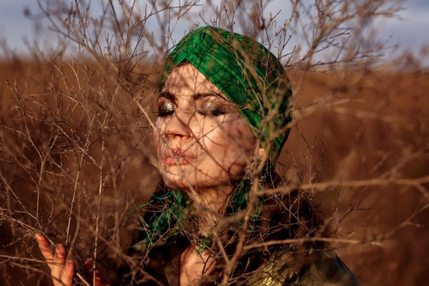

Shop Turbans: Stylish and Protective Hair Accessories for Every Occasion
At Yougonatural.com, we understand that turbans are more than just a fashion statement—they are a versatile and essential accessory for hair protection and style. Whether you're looking to protect your natural curls, add a chic touch to your outfit, or keep your hair secure during the day, our collection of fashionable turbans offers something for everyone.
Explore our wide range of turbans and find the perfect piece to elevate your look while taking care of your hair.
Turbans with Different Trendy Colors and Styles
Why Choose Turbans for Your Hair?

Turbans have long been a staple in many cultures around the world, celebrated not only for their beauty but also for their practicality. Here are just a few reasons why turbans should be a key accessory in your wardrobe:
1.Protect Your Hair: One of the primary benefits of wearing a turban is protecting your hair from damage. The fabric helps shield your natural hair from the elements, including heat, humidity, and pollution. Turbans also help to minimize friction between your hair and pillowcase, reducing breakage and especially for curly and textured hair types.
2.Comfort and Style:Turbans are incredibly versatile, allowing you to create a wide variety of looks. Whether you prefer a sleek, minimalist style or a bold, statement-making accessory, a fashionable turban can complement your outfit and suit any occasion. Plus, they’re comfortable to wear, making them perfect for both everyday wear and special events.
3.Easy to Use:Turbans are simple to wear and require little maintenance. Unlike other hairstyles that might require styling tools or constant touch-ups, a turban can be put on in seconds, making it a convenient option for busy days or last-minute outings.
Our Collection of Fashionable Turbans
1.Classic Solid Color Turbans
For those who prefer a more understated look, our classic solid color turbans are perfect. Available in a variety of shades, from neutral tones to vibrant hues, these turbans add a chic and elegant touch to any outfit. Whether you're dressing up for a special event or simply adding a refined touch to your daily look, these turbans are a timeless addition to your accessory collection.
2. Bold Patterned Turbans
Make a statement with one of our bold patterned turbans. From floral prints to geometric designs, these turbans are perfect for adding a pop of personality to your look. They are ideal for those who love to experiment with different styles and express their individuality through fashion.
3. Textured and Embellished Turbans
If you're looking for something unique and eye-catching, our textured and embellished turbans are the way to go. Featuring intricate beadwork, sequins, or pleated designs, these turbans are perfect for special occasions or when you want to add a touch of glamour to your everyday outfit.
4. Soft and Breathable Fabrics
Comfort is key when it comes to turbans, and we ensure that every piece in our collection is made from soft, breathable materials. Our turbans are crafted from cotton, satin, and silk, offering a luxurious feel that is gentle on your scalp and hair. These fabrics also allow for optimal breathability, ensuring that your head stays comfortable throughout the day.
Benefits of Wearing Fashionable Turbans
Turbans are not only a stylish accessory but also provide several benefits when it comes to hair care and protection. Here’s why incorporating turbans into your hair care routine can make a difference:
Wearing a turban helps to prevent friction that can lead to split ends and breakage, especially for natural hair. The soft fabric of a turban acts as a barrier between your hair and the external environment, keeping your hair safe from dust, pollutants, and harsh weather conditions.
Turbans serve as a protective style, which is particularly beneficial for those with texture or curly hair. By keeping your hair tucked away and protected, turbans allow your curls to thrive without constant manipulation or exposure to heat styling tools.
Not only are turbans functional, but they are also incredibly fashionable. They come in a variety of styles, from sleek and modern to bold and colorful, allowing you to express your personality and add a stylish element to your wardrobe. Whether you’re dressing up for a night out or just want to add some flair to your casual outfit, turbans are the perfect accessory.
Hair Health Protection

Versatile and Fashion-Forward
Protective Styling
How to Style Your Turban
Styling your turban is easy and fun! Here are a few tips on how to wear your fashionable turban in different ways:
The classic wrap is a simple and elegant style where the turban is wrapped around the head for a neat, polished look. This style works well for both casual and formal occasions and can be paired with any outfit, from a cozy sweater to a glamorous evening gown.
For a more vintage-inspired look, try the retro twist style. Simply twist the fabric of your turban at the front and tie it securely in place. This style adds a bit of drama and sophistication, making it perfect for events like weddings, parties, or a night out.
If you're looking for a more laid-back style, wear your turban as a headband. Simply push it back on your head, leaving some of your natural hair exposed to the front. This style works great for casual days when you want to look stylish yet comfortable.
The Classic Wrap
The Retro Twist
The Casual Headband
Why Shop at Yougonatural.com?
At Yougonatural.com, we’re committed to offering only the best turbans and hair accessories to complement your natural beauty and care routine. Here’s why you’ll love shopping with us:
1. High-Quality Materials: We prioritize quality, which is why we carefully select the fabrics used for our turbans. Whether it's soft cotton, breathable satin, or luxurious silk, we ensure that each turban is made to last and feel comfortable.
2. Variety and Style: We offer a wide variety of fashionable turbans, from classic solids to eye-catching patterns and embellishments, so you can find the perfect one to suit your unique style and needs.
3. Customer-Focused Service: We provide excellent customer service. Our team is here to assist you with any questions or concerns, ensuring a seamless shopping experience from start to finish.
Shop Now: Elevate Your Hair Game with Turbans
Ready to add a fashionable turban to your collection? Browse our shop today and find the perfect turban that complements your style while offering the protection and comfort your hair deserves.
Shop Now and experience the difference with Yougonatural.com.
"I liked so much and had a great look. Highly recommend!"
- Alex Johnson
"he colors were fantastic!"
- Jamie Lee
" The turbans were amazing, and I loved it."
- Taylor Brown